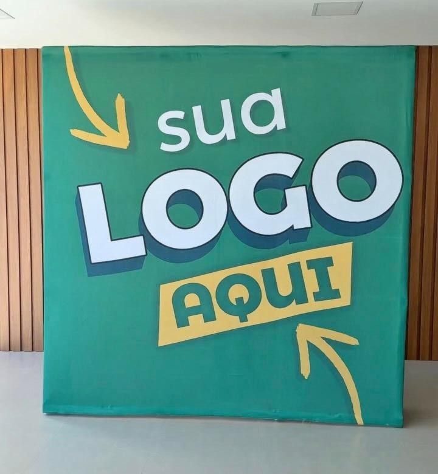
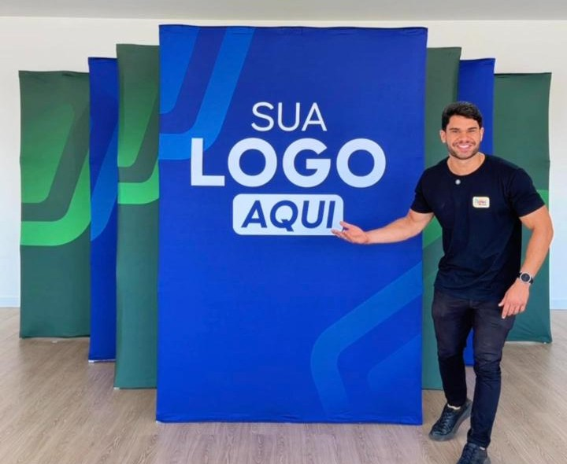
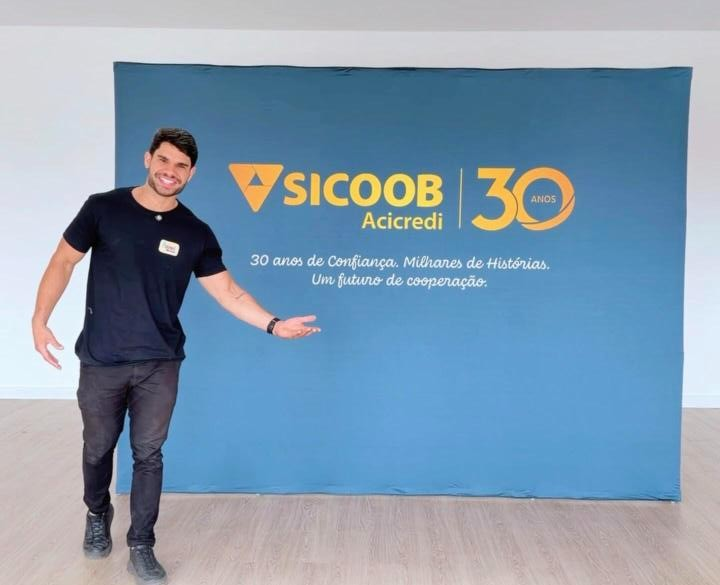
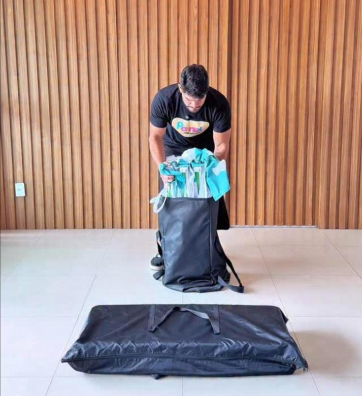
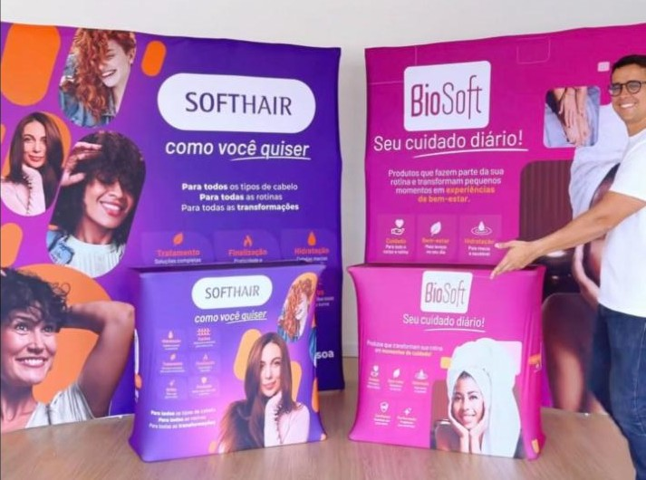

Backdrop em tecido
O fundo da sua marca para palco, estande, foto oficial e credenciamento. Estrutura em alumínio, tecido importado com a sua arte e tudo dentro de uma bolsa de transporte.
- Medidas como 2,25 × 2,25 m e 2,25 × 1,52 m
- Tecido que não amassa, não fica transparente e não tem emenda
- Monta em minutos
- Frete grátis para todo o Brasil, exceto região Norte
A mensagem já vai com o nome do produto. É só escolher a medida.
Medidas
Largura × altura do painel montado. Precisa de outro tamanho? A Painel Expresso trabalha com diversas medidas. Veja o guia de tamanhos.
2,25 × 2,25 m
QuadradoO formato do fundo de foto e do palco. Cabe pessoas de corpo inteiro na frente da marca.
Quero esta medida1,52 × 2,25 m
VerticalPara espaço estreito, recepção e para combinar com outros painéis num estande.
Quero esta medidaOutras medidas
Do painel reto ao panorâmico que cobre a parede inteira. Diga o espaço que você tem e o atendente indica o tamanho.
Consultar medidaDo que é feito, e por que isso aparece na foto.
Tecido importado
Não é Oxford. É próprio para backdrop: não amassa, não fica transparente e não tem emenda cortando a arte.
Alumínio reforçado
Estrutura leve para carregar e com pintura eletrostática, para aguentar montagem atrás de montagem.
Arte sublimada
A sua arte é impressa no próprio tecido. Logo, cenário, campanha: o que couber na medida.
Bolsa de transporte
Estrutura e tecido vão juntos numa bolsa. Cabe no carro e chega inteiro no evento.

Sai da bolsa, fica de pé, volta para a bolsa.
- 1
Tire a estrutura de alumínio da bolsa e abra no lugar do evento.
- 2
Vista o tecido com a sua arte na estrutura.
- 3
Pronto. Terminou o evento, desmonte e guarde tudo de novo.
Mudou a campanha? A mesma estrutura recebe uma nova arte quantas vezes você quiser.
Onde o backdrop trabalha
Eventos corporativos
Palco, recepção e a foto oficial com a marca atrás.

Feiras e estandes
Dois ou mais painéis viram um estande no espaço vazio.

Ponto de venda
Ação promocional na loja sem obra e sem instalador.
Cenários e festas
O panorâmico transforma o salão num cenário inteiro.
Perguntas sobre backdrop
Qual o tamanho de um backdrop?
Os formatos mais usados são 2,25 × 2,25 m, para fundo de foto e palco, e 1,52 × 2,25 m, vertical. A Painel Expresso faz outras medidas, até o panorâmico de parede inteira.
Backdrop de tecido ou de lona: qual escolher?
O tecido vai dobrado na bolsa e estica na estrutura sem marca. A lona costuma ser enrolada e presa com ilhós. Para quem monta e desmonta com frequência, o tecido é mais prático.
O tecido fica transparente na luz do palco?
Não. O tecido é importado e próprio para backdrop. Também não amassa e não tem emenda.
Posso trocar a arte depois?
Pode. A estrutura de alumínio continua a mesma e recebe um tecido novo com outra arte.
Tem frete grátis?
Sim, para todo o Brasil, exceto a região Norte.
Como envio a minha arte?
Pelo WhatsApp. O atendente recebe o arquivo e orienta sobre a medida escolhida.
Combine com o backdrop

Qual backdrop combina com o seu evento?
Escolha um atendente. A conversa abre no WhatsApp já falando do backdrop.